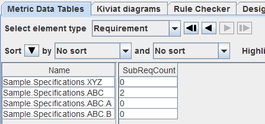

| Prev - Next - Down | SDMetrics - the UML design measurement tool |
The following XMI serialization of a SysML model contains a requirement "ABC" with Id "R2". The requirement is decomposed into two sub-requirements "A" and "B" with Ids "R2.1" and "R2.2", respectively:
<xmi:XMI xmi:version="2.1" ...>
<uml:Model name = "Sample" xmi:id = "xmi1">
<packagedElement xmi:type="uml:Package" xmi:id="xmi2" name="Specifications">
<packagedElement xmi:type="uml:Class" xmi:id="xmi3" name="XYZ" />
<packagedElement xmi:type="uml:Class" xmi:id="xmi4" name="ABC">
<nestedClassifier xmi:type="uml:Class" xmi:id="xmi5" name="A" />
<nestedClassifier xmi:type="uml:Class" xmi:id="xmi6" name="B" />
</packagedElement>
</packagedElement>
...
</uml:Model>
<sysml:Requirement base_Class="xmi3" xmi:id="xmi7"
Text="The system shall do XYZ" Id="R1" />
<sysml:Requirement base_Class="xmi4" xmi:id="xmi8"
Text="The system shall do such and such" Id="R2" />
<sysml:Requirement base_Class="xmi5" xmi:id="xmi9"
Text="The system shall do A" Id="R2.1" />
<sysml:Requirement base_Class="xmi6" xmi:id="xmi10"
Text="The system shall do B" Id="R2.2" />
</xmi:XMI>
From the XMI serialization we can see that the SysML uses class nesting to model
requirement decomposition. The class to represent the decomposed requirement
owns the classes representing the sub-requirements as nested classifiers.
We could therefore define a metric counting the sub-requirements like so:
<metric name="SubRequirements" domain="class"> <projection relset="nestedclassifiers" target="class" condition="Reqmt!=''" /> </metric>Defining the metric with the domain "class" has the disadvantage that the metric is calculated for all classes, even those that do not represent requirements at all. A better solution is to define the metric for the domain "requirement":
<metric name="SubReqCount" domain="requirement">
<projection relset="base.nestedclassifiers" target="class"
condition="Reqmt!=''" />
</metric>
The output of this metric in the metric data tables is not very satisfactory, though:Because the requirement elements in the model are unnamed and outside the scope of the UML model, we cannot tell from the metric output to which requirement the data belongs.
To improve this situation, SDMetrics' metamodel facility provides extension references. If the extending model element contains an extension reference, SDMetrics moves the extending model element into the same namespace as the extended model element, and copies the name from the extended element.
To use this feature for our SysML requirements, we change the type of cross-reference "base" from "ref" to "extref", thus declaring it an extension reference:
<modelelement name="requirement"> <attribute name="base" type="extref" /> <attribute name="text" /> <attribute name="reqid" /> </modelelement>This instructs SDMetrics to move the requirement model elements into the same namespace as the class they extend, and copy the name of the extended class. Each requirement element thus has the same owner and the same name as the class that represents the requirement. With this modification, the extending elements are easier to handle.
One immediate benefit of extension references is that the elements are
easier to trace in the metric data tables:

Figure 37: Metric output for requirements with extension reference
Another benefit is that we can simplify some metric and rule definitions. Take for example the metric "ReqCount" defined earlier to count the number of requirements in a package. Because the packages now own the requirement elements, we can define the metric in a more straightforward manner without resorting to 'helper' metrics:
<metric name="ReqCount" domain="package"> <projection relation="context" target="requirement" /> </metric>
| Prev | Up | Next |
| Section 8.7.4 "Profile Extensions with Regular Model Elements" | Contents | Section 8.7.6 "Extension References with Inheritance" |